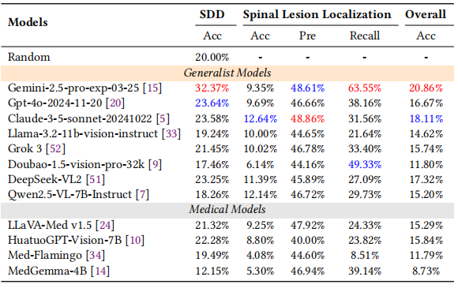

Abstract
With increasing integration of Large Vision-Language Models (LVLMs) into the medical field, comprehensive evaluation of their performance in various medical domains becomes critical. However, due to disciplinary barriers, existing benchmarks primarily assess general medical tasks, inadequately capturing performance in nuanced areas like the spine. To address this, we introduce SpineBench, a comprehensive Visual Question Answering (VQA) benchmark designed for fine-grained analysis and evaluation of LVLM in the spinal domain. SpineBench comprises 64,878 QA pairs from 40,263 spine images, covering 11 spinal diseases through two critical clinical tasks: spinal disease diagnosis and spinal lesion localization. SpineBench is built by integrating and standardizing image-label pairs from open-source spinal disease datasets, and samples challenging hard negative options for each VQA pair based on visual similarity (similar but not same disease). We evaluate 12 leading LVLMs on SpineBench. The results reveal that these models exhibit poor performance in the spine domain, highlighting limitations of current LVLM in spine domain and guiding future improvements in spinal medicine applications.
Dataset Overview
SpineBench integrates four public spinal disease datasets across X-ray and MRI modalities. The following table summarizes the data composition:
| Dataset | Modality | Dimension | Primary Diseases | Count |
|---|---|---|---|---|
| BUU Spine | X-ray | 2D | Spondylolisthesis | 806 |
| CSXA | X-ray | 2D | Cervical Disorders | 4,962 |
| RSNA | MRI | 3D | Degenerative Conditions | 48,688 |
| VinDr-SpineXR | X-ray | 3D | Bone Lesions | 23,202 |
VQA Generation Pipeline
1) Dataset Construction and Standardization: Compile SpineBench by integrating multiple public spinal disease datasets, covering 11 distinct diseases. Standardize images to 2D RGB format and meticulously revise disease labels based on MeSH and expert clinical guidance to ensure quality and consistency.
2) Diverse VQA Pair Generation: For diagnosis and localization tasks, utilize Gemini-2.5-Pro to formulate multiple semantically equivalent questions with varied expressions for core query intents, evaluating the model's semantic understanding.
3) High-Confusion Distractor Option Creation: Generate visually plausible and highly confusable distractor options by identifying diseases visually similar to the query image (using SigLIP2 features and similarity metrics). Mandatorily include a "Healthy" option to rigorously assess the model's differential diagnostic capabilities.
4) Validation and Final Benchmark Assembly: Manually verify all generated VQA pairs to ensure data quality and benchmark validity. This culminates in the final SpineBench, featuring tens of thousands of high-quality VQA pairs specifically for spinal disease diagnosis and lesion localization tasks.

Small Scale Benchmark Selection
To facilitate fast evaluation, we constructed a subset containing 2,758 VQA pairs:
- 1,758 for spinal disease diagnosis
- 1,000 for lesion localization
Image selection is based on clarity, contrast, and label balance.
Experiments
Results of different LVLMs on SpineBench
Specifically, SDD denotes Spinal Disease Diagnose, SLL denotes Spinal Lesion Localization.
Meanwhile, in each column, the best and second-best performance are marked in red and blue, respectively.